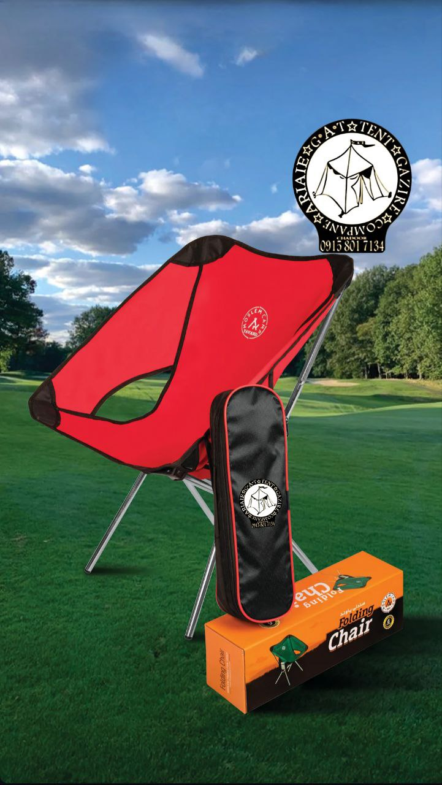
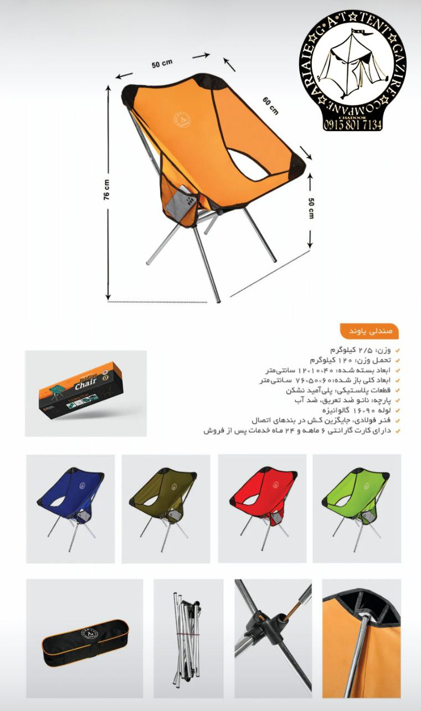
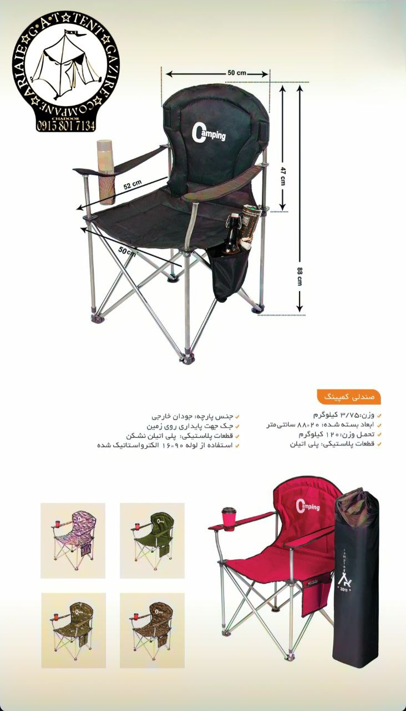
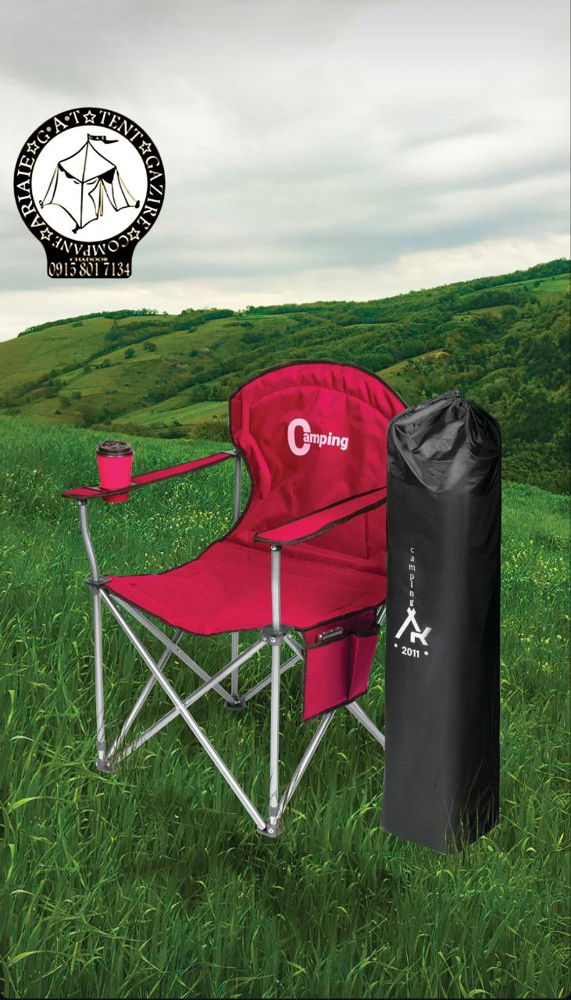

صندلی کمپینگ تاشو JAT | پک ۴ عددی
سبک، مقاوم و قابل حمل — ایدهآل برای کمپینگ، ساحل، پیکنیک، ماهیگیری و حیاط. بدون نیاز به مونتاژ، همراه با کیف حمل.




ویژگیهای کلیدی
- وزن هر صندلی فقط حدود ۲ کیلوگرم
- تحمل وزن تا ۱۳۶ کیلوگرم
- فریم لوله فولادی ۱۶ میلیمتری با پوشش پودری
- پارچه پلیاستر محکم و مقاوم
- تاشو و باز شدن در چند ثانیه — بدون ابزار
- همراه با کیف حمل مخصوص
- دارای جا لیوانی
- مناسب ساحل، چمن، حیاط، کمپینگ و پیکنیک
- پک ۴ عددی — ایدهآل برای خانواده و گروه
توضیحات محصول
صندلی کمپینگ تاشو JAT انتخابی هوشمندانه برای کسانی است که به دنبال راحتی، سبکی و دوام در فضای باز هستند. این صندلیها با فریم فولادی مقاوم و پارچه پلیاستر باکیفیت ساخته شدهاند تا هم سبک باشند و هم بتوانند وزن بالا را تحمل کنند.
طراحی تاشو آنها باعث میشود در چند ثانیه آماده استفاده شوند و فضای بسیار کمی اشغال کنند. هر صندلی همراه با کیف حمل عرضه میشود تا حمل و نگهداریاش بسیار آسان باشد. چه در کنار آتش کمپ باشید، چه در ساحل یا حیاط خانه، این صندلیها تجربهای راحت و بدون دردسر برایتان فراهم میکنند.
اگر به دنبال صندلی کمپینگ باکیفیت، سبک و مقرونبهصرفه هستید، پک ۴ عددی JAT گزینهای عالی برای شماست.
مشخصات فنی
| برند | JAT |
| تعداد | ۴ عدد |
| وزن هر صندلی | حدود ۲ کیلوگرم (۴.۵ پوند) |
| تحمل وزن | تا ۱۳۶ کیلوگرم (۳۰۰ پوند) |
| ابعاد باز شده | حدود ۵۰ × ۵۴ × ۸۰ سانتیمتر |
| ابعاد تا شده | حدود ۸۰ × ۱۳ × ۱۳ سانتیمتر |
| جنس فریم | لوله فولادی ۱۶ میلیمتری با پوشش پودری |
| جنس پارچه | پلیاستر محکم و مقاوم |
| ویژگیهای اضافی | جا لیوانی + کیف حمل |
| نیاز به مونتاژ | ندارد |
| رنگهای موجود | مشکی، آبی، قرمز |
| کاربرد | کمپینگ، ساحل، پیکنیک، ماهیگیری، حیاط، رویداد ورزشی |
آماده سفارش هستید؟
برای استعلام قیمت و ثبت سفارش با ما در واتساپ در ارتباط باشید.
سفارش از طریق واتساپنظر مشتریان ما
تجربه واقعی کسانی که صندلی کمپینگ تاشو JAT را خریدهاند
«پک ۴ عددی صندلی کمپینگ JAT رو سفارش دادم. خیلی سبک و محکم هستن. برای پیکنیک خانوادگی عالی بودن و راحت تا میشن.»
«برای ساحل خریدم. خیلی راحت تا میشه و کیف حملش عالیه. تحمل وزنش هم خوبه. کاملاً راضیام.»
«کیفیت دوخت و فریم خیلی خوبه. سبکتر از چیزی بود که فکر میکردم. برای کمپینگ چندروزه عالی کار کرد.»
«برای حیاط خونه خریدم. خیلی راحت و محکم هستن. جا لیوانیش هم خیلی به درد میخوره. پیشنهاد میکنم.»